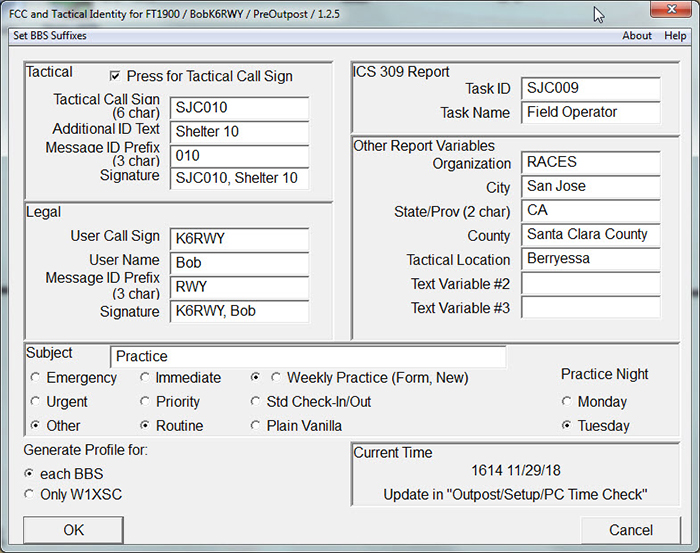
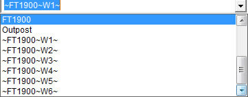

PreOutpost Overview -- One Master Profile
|  |
| Fig. 2 -- Legal and Tactical Identification and Report Settings Dialog Box |
In the simplest case, PreOutpost asks for Identify and Report Information and starts Outpost (see Figure 2). In this case only one Master Profile is present and the operator need only fill in the blanks. PreOutpost the uses a Master Profile file (which is not available to Outpost to modify) to create one to six profiles and the user and tactical ID files that Outpost may see and use. These profiles are a useful starting point for operating the station. They will all contain the Identity and Report Information. The other properties in the profiles are unchanged. When Outpost is started one of the profiles produced by PreOutpost may be selected to configure Outpost for a specific BBS.
These new profiles should not over write existing profiles. Since the names of the profiles are the names of the files a convention of using the “~” character in the names to reduce the chance of over writing an existing profile. The new profile names are constructed as follows:
‘~’ ‹Original Profile Name› ‘~’ <User supplied Suffix>‘~’
For example, if the Original Profile Name is “FT1900” and all six profiles with "W1" through "W6" suffixes are generated then the following profiles will appear in the list of profiles (and see Figure 3):
|  |
| Fig. 3 -- Outpost's Profile Dropdown List with PreOutpost created profiles |
- ~FT1900~W1~
- ~FT1900~W2~
- ~FT1900~W3~
- ~FT1900~W4~
- ~FT1900~W5~
- ~FT1900~W6~
The BBS name was shortened so that Outpost Profile edit box would contain the entire profile name. The original profile was named FT1900 to reflect the modem/radio configuration (I also have a D710 profile).
All six profiles are produced so that by changing profile and the radio’s frequency one may quickly send a message on using another BBS. If the option to produce one profile is selected a profile which contains W1XSC as the BBS is produced.
After the new profiles are produced, PreOutpost starts Outpost. The user may then select one of the profiles produced, set the correct frequency on the radio and begin composing and transmitting and receiving messages.
When Outpost terminates (e.g. the user has completed his shift) PreOutpost will delete all the profiles of the form "~*~W?~".
To summarize then, the operator starts PreOutpost, inputs his identity information into the dialog box and selects one of the profiles produced after Outpost starts. The Master Profile name is on the title bar of the dialog box (i.e. see Figure 1: FCC and Tactical Identity for FT1900). All six profiles will contain the FCC and Tactical and Report information provided in the dialog box. The profiles will be deleted when Outpost terminates.